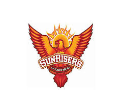
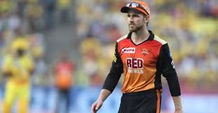

SUNRISERS HYDERABAD

The Sunrisers Hyderabad (often abbreviated as SRH) are a franchise cricket team based in Hyderabad,
Telangana, India, that plays in the Indian Premier League (IPL). The franchise is owned by Kalanithi
Maran of the Sun TV Network and was founded in 2012 after the Hyderabad-based Deccan Chargers were
terminated by the IPL. The team is currently captained by David Warner and coached by Trevor Bayliss.
The primary homeground of the team is the Rajiv Gandhi International Cricket Stadium, Hyderabad with a
capacity of 55,000.
The brand value of the Sunrisers Hyderabad was estimated to be ₹483 crore (US$68 million) in 2019 as the
overall brand of IPL was increased to ₹47,000 crore (US$6.6 billion), according to Duff & Phelps.
The team made their first IPL appearance in 2013, where they reached the playoffs, eventually finishing in
fourth place. The SunRisers won their maiden IPL title in the 2016 season, defeating Royal Challengers
Bangalore by 8 runs in the final. The team has qualified for the play-off stage of the tournament in every
season since 2016. In 2018, the team reached the finals of the Indian Premier League, but lost to Chennai
Super Kings by 8 Wickets, following a century by Shane Watson. The team is considered one of the best
bowling sides, often admired for its ability to defend low totals. David Warner is the leading run scorer
for the side, having won the Orange Cap 3 times, in 2015, 2017, and 2019. Bhuvneshwar Kumar is the
leading wicket-taker.
CAPTAIN

Kane Stuart Williamson (born 8 August 1990) is a New Zealand international cricketer who is currently the
captain of the New Zealand national team in all formats. He is a right-handed batsman and an occasional off
spin bowler. Williamson made his first-class cricket debut in December 2007.[1] He made his U-19 debut
against the touring Indian U-19 team the same year and was named captain of the New Zealand U-19 team for
the 2008 U-19 Cricket World Cup. He made his international debut in 2010. Williamson has represented New
Zealand at the 2011, 2015 and 2019 editions of the Cricket World Cup and 2012, 2014 and 2016 editions of the
ICC World Twenty20. He made his full-time captaincy debut for New Zealand in the 2016 ICC World Twenty20 in
India. He captained New Zealand national team in 2019 Cricket World Cup and led the team to the finals. He
was then awarded the Player of the Tournament award.
On 6 February 2015, Sunrisers Hyderabad of the IPL signed Williamson for US$96,500. He played for Sunrisers
Hyderabad in the 2016 season where they won the title. For the 2017 Indian Premier League he was retained by
the side. In the 2018 IPL Auction, he was retained by the Sunrisers Hyderabad for US$460,500. On 29 March
2018, he was announced captain of Sunrisers Hyderabad replacing David Warner.[16][17] Under Williamson's
captaincy Sunrisers Hyderabad finished runners-up after Chennai Super Kings defeated them in the final by 8
wickets, he also won the Orange Cap for scoring the most runs (735) in the 2018 IPL season. He was named
in the IPL XI of the tournament by Cricbuzz.